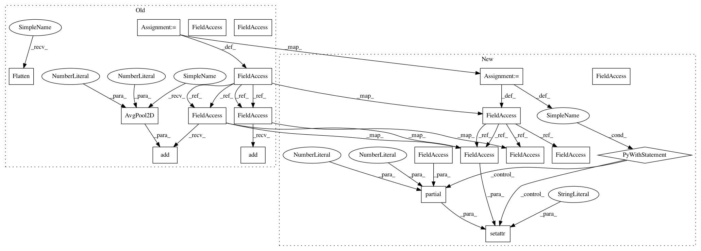

553f777ad245ef3caa799151e34e6cc37bbcb11a,gluon/gluoncv2/models/mobilenetv2.py,MobileNetV2,__init__,#MobileNetV2#Any#Any#Any#Any#Any#Any#Any#,93
Before Change
self.classes = classes
with self.name_scope():
self.features = nn.HybridSequential(prefix="")
self.features.add(conv3x3_block(
in_channels=in_channels,
out_channels=init_block_channels,
strides=2,
bn_use_global_stats=bn_use_global_stats,
activation=ReLU6()))
in_channels = init_block_channels
for i, channels_per_stage in enumerate(channels):
stage = nn.HybridSequential(prefix="stage{}_".format(i + 1))
with stage.name_scope():
for j, out_channels in enumerate(channels_per_stage):
strides = 2 if (j == 0) and (i != 0) else 1
expansion = (i != 0) or (j != 0)
stage.add(LinearBottleneck(
in_channels=in_channels,
out_channels=out_channels,
strides=strides,
bn_use_global_stats=bn_use_global_stats,
expansion=expansion))
in_channels = out_channels
self.features.add(stage)
self.features.add(conv1x1_block(
in_channels=in_channels,
out_channels=final_block_channels,
bn_use_global_stats=bn_use_global_stats,
activation=ReLU6()))
in_channels = final_block_channels
self.features.add(nn.AvgPool2D(
pool_size=7,
strides=1))
self.output = nn.HybridSequential(prefix="")
self.output.add(conv1x1(
in_channels=in_channels,
out_channels=classes,
use_bias=False))
self.output.add(nn.Flatten())
def hybrid_forward(self, F, x):
x = self.features(x)
After Change
in_channels : int, default 3
Number of input channels.
in_size : tuple of two ints, default (224, 224)
Spatial size of the expected input image.
classes : int, default 1000
Number of classification classes.
def __init__(self,
channels,
init_block_channels,
final_block_channels,
remove_exp_conv,
bn_use_global_stats=False,
in_channels=3,
in_size=(224, 224),
classes=1000,
**kwargs):
super(MobileNetV2, self).__init__(**kwargs)
self.in_size = in_size
self.classes = classes
with self.name_scope():
self.features = nn.HybridSequential(prefix="")
self.features.add(conv3x3_block(
in_channels=in_channels,
out_channels=init_block_channels,
strides=2,
bn_use_global_stats=bn_use_global_stats,
activation=ReLU6()))
in_channels = init_block_channels
for i, channels_per_stage in enumerate(channels):
stage = nn.HybridSequential(prefix="stage{}_".format(i + 1))
with stage.name_scope():
for j, out_channels in enumerate(channels_per_stage):
strides = 2 if (j == 0) and (i != 0) else 1
expansion = (i != 0) or (j != 0)
stage.add(LinearBottleneck(
in_channels=in_channels,
out_channels=out_channels,
strides=strides,
bn_use_global_stats=bn_use_global_stats,
expansion=expansion,
remove_exp_conv=remove_exp_conv))
in_channels = out_channels
self.features.add(stage)
self.features.add(conv1x1_block(
In pattern: SUPERPATTERN
Frequency: 3
Non-data size: 20
Instances
Project Name: osmr/imgclsmob
Commit Name: 553f777ad245ef3caa799151e34e6cc37bbcb11a
Time: 2020-02-18
Author: osemery@gmail.com
File Name: gluon/gluoncv2/models/mobilenetv2.py
Class Name: MobileNetV2
Method Name: __init__
Project Name: osmr/imgclsmob
Commit Name: 056338255ea968d28ab462295b308cf475adcdde
Time: 2018-09-05
Author: osemery@gmail.com
File Name: chainer_/models/dpn.py
Class Name: DPN
Method Name: __init__
Project Name: osmr/imgclsmob
Commit Name: 553f777ad245ef3caa799151e34e6cc37bbcb11a
Time: 2020-02-18
Author: osemery@gmail.com
File Name: gluon/gluoncv2/models/mobilenetv2.py
Class Name: MobileNetV2
Method Name: __init__
Project Name: osmr/imgclsmob
Commit Name: 29eac269527a4466dfef282374aed49ce66d9bfb
Time: 2018-09-06
Author: osemery@gmail.com
File Name: chainer_/models/nasnet.py
Class Name: NASNet
Method Name: __init__